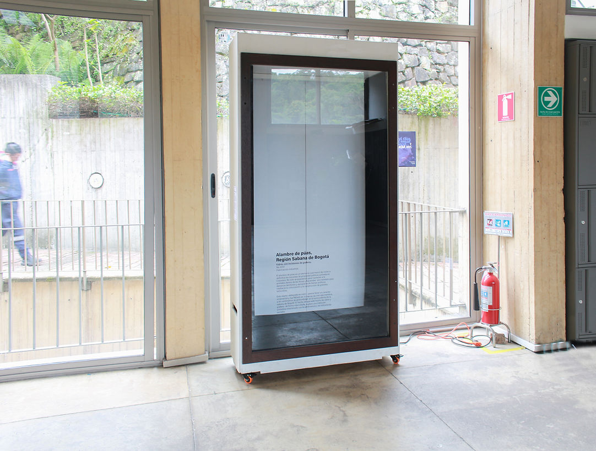
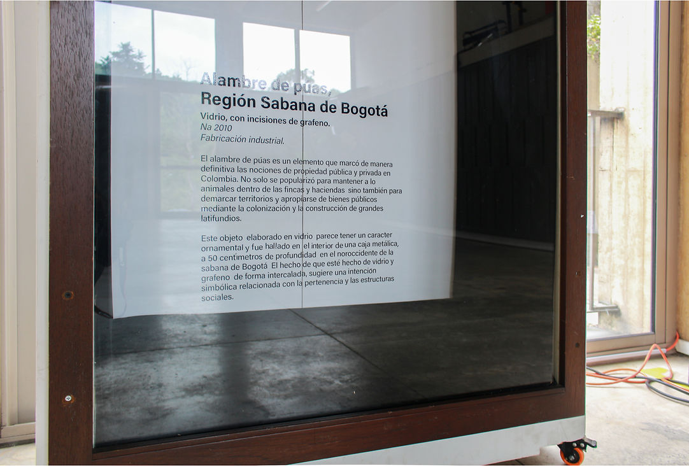
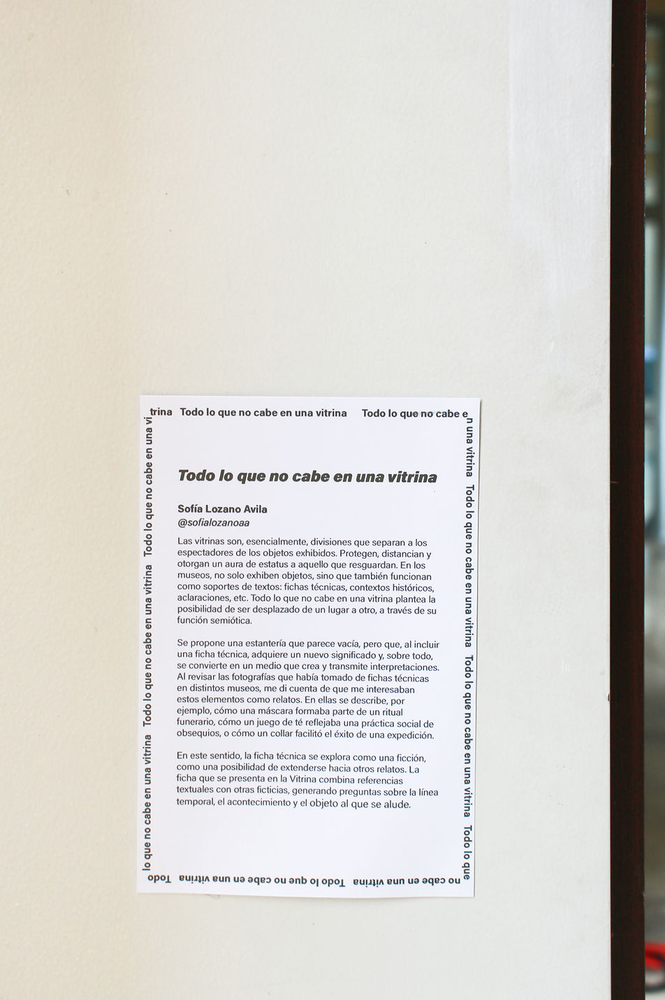

everything that does not fit in a display case
23 April - 23 May 2025
Universidad de Los Andes - Bogotá.
Winning project of the “La vitrina” open call.
Display cases are essentially divisions that separate viewers from the objects on show. They protect, they hold at a distance, and they lend an aura of status to what they keep. In museums, cases do not only display objects: they also act as supports for texts —labels, historical context, clarifications. Since La Vitrina is a mobile space for experimentation, it seemed a good opportunity to displace one place into another through its semiotic function.
This project sets out a shelf that appears empty but which, once a label is added, takes on new meaning and, above all, becomes a medium that creates and transmits interpretations. Todo lo que no cabe en una vitrina consists of cut-vinyl text applied to the outside of the glass. The text is based on labels I saw at the National Museum. Going back through photos on my phone, the labels and descriptions that caught my attention went beyond a plain reference to the object (date, year) and were rounded out by a story. They describe, for instance, how a mask formed part of a death ritual, how a tea set reflected a social practice of gift-giving, or how a necklace secured the success of an expedition.
I see these labels as fictions, as a possibility of extending into other stories. The final label therefore combines textual references with invented ones, raising questions about the timeline, the event, the object and the place being alluded to.

Todo lo que no cabe en una vitrina. Installation. Vinyl, cut plotter, display case. Dimensions variable. 2025

Todo lo que no cabe en una vitrina. Installation. Vinyl, cut plotter, display case. Dimensions variable. 2025

Exhibition text.